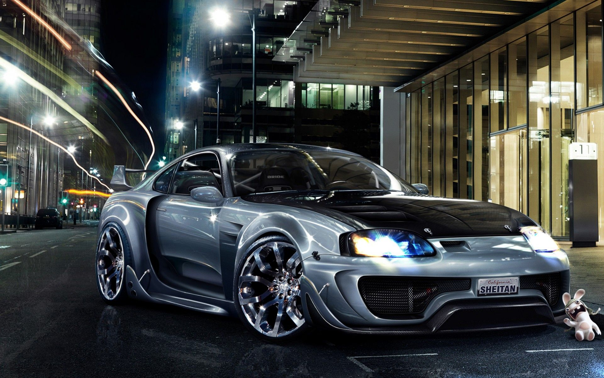

HOME
The Evolution of Sports Cars: Performance, Technology, and Innovation

Introduction
Sports cars have long been symbols of speed, power, and cutting-edge technology. Designed for high performance,
these vehicles emphasize aerodynamics, lightweight construction, and advanced engineering to deliver an
exhilarating driving experience...
The History of Sports Cars
Early Beginnings (1900s-1950s)
- Mercedes-Benz SSK (1928): A supercharged roadster known for its speed and agility.
- Jaguar XK120 (1948): One of the first sports cars to exceed 120 mph.
- Chevrolet Corvette C1 (1953): America's answer to European roadsters.
The Toyota Supra: A Legendary Sports Car
The Toyota Supra has remained one of the most celebrated sports cars since its introduction in the late 1970s. It
has evolved through multiple generations, each bringing new advancements in performance and design...
The Future of Sports Cars
The sports car industry is shifting towards sustainability while maintaining high performance. Upcoming trends
include:
- Electric Sports Cars: Vehicles like the Rimac Nevera and Porsche Taycan Turbo S are proving that
electric cars can be just as thrilling.
- Hybrid Supercars: Models like the Ferrari SF90 Stradale and McLaren Artura combine internal
combustion engines with electric motors.
- Autonomous Performance Features: AI-assisted driving modes are enhancing track performance while
maintaining driver engagement.
Conclusion
Sports cars have evolved dramatically from their early beginnings to modern high-tech machines. Whether it's the
classic appeal of a Ferrari 488 Pista, the raw power of a Dodge Challenger Hellcat, or the balanced precision of
a Toyota Supra, these vehicles continue to capture the imagination of car enthusiasts worldwide...
Musle car
Introduction
Muscle cars are a symbol of raw power, aggressive styling, and high-performance engineering. Originating in the United States during the 1960s, these vehicles were built for speed, featuring large V8 engines, rear-wheel drive, and a bold presence on the road...
The History of Muscle Cars
The Birth of the Muscle Car (1960s-1970s)
- Pontiac GTO (1964): Considered the first true muscle car, featuring a 389 cubic-inch V8.
- Ford Mustang (1964½): Introduced as a "pony car" but later evolved into a powerful muscle machine.
- Chevrolet Camaro SS (1967): GM’s answer to the Mustang, offering aggressive styling and powerful performance.
Key Features of a Muscle Car
- High-Performance V8 Engines: Large-displacement V8s delivering massive horsepower.
- Rear-Wheel Drive (RWD): Prioritizes weight distribution and thrilling burnouts.
- Aggressive Styling: Wide grilles, racing stripes, and hood scoops.
- Loud Exhaust Notes: Deep, rumbling sounds enhanced by performance exhaust systems.
The Ford Mustang: An Iconic Muscle Car

The Ford Mustang was first introduced in 1964 and has since become one of the most recognizable muscle cars in history...
The Future of Muscle Cars
With the automotive industry shifting toward electrification, muscle cars are also evolving...
- Electric Muscle Cars: The Dodge Charger Daytona SRT EV is set to revolutionize muscle car performance.
- Hybrid Powertrains: Ford is exploring hybrid technology for the Mustang.
- Modern Aerodynamics: Active aero and adaptive suspensions improve handling.
Conclusion
Muscle cars remain an essential part of automotive culture, representing raw power and adrenaline-fueled performance...
Sports sedan
Introduction
Sports sedans offer the perfect blend of high-performance engineering and everyday usability. Unlike traditional sports cars, these four-door vehicles provide exhilarating speed, precise handling, and luxurious comfort, making them ideal for both enthusiasts and daily drivers.
The History of Sports Sedans
The Rise of Performance Sedans (1960s-1980s)
- BMW 2002 (1968): One of the first compact sports sedans, combining agility with a punchy engine.
- Alfa Romeo Giulia (1962): An Italian masterpiece known for its sharp handling and lively performance.
- Mercedes-Benz 300SEL 6.3 (1968): A luxury sedan that shocked the world with its powerful V8.

Key Features of a Sports Sedan
- Turbocharged or High-Performance Engines: From inline-6 to V8, sports sedans balance power and efficiency.
- All-Wheel or Rear-Wheel Drive: Ensures superior traction and dynamic driving capabilities.
- Advanced Suspension: Provides precision handling without compromising comfort.
- Sporty Yet Practical Design: Aggressive styling with a spacious and luxurious interior.
The BMW M5: A Benchmark in Sports Sedans

The BMW M5 is one of the most legendary sports sedans, known for combining blistering speed with daily drivability. Over generations, it has set the standard for performance sedans.
The Future of Sports Sedans
With the shift toward electrification, sports sedans are also evolving. Automakers are focusing on hybrid and electric drivetrains to enhance efficiency without compromising performance.
- Electric Performance Sedans: The Porsche Taycan and Tesla Model S Plaid prove that EVs can be thrilling.
- Hybrid Technology: The latest Mercedes-AMG and BMW M models integrate electric boosts for instant torque.
- Cutting-Edge Aerodynamics: Improved downforce and adaptive suspensions enhance cornering ability.
Conclusion
Sports sedans continue to be a favorite among driving enthusiasts, offering a thrilling yet practical driving experience. Whether it's the classic BMW M5, the powerful Mercedes-AMG E63, or the high-tech Tesla Model S Plaid, these vehicles prove that performance and practicality can coexist in perfect harmony.
Sports SUV
Introduction
Sports SUVs combine high-performance engineering with practicality, offering a thrilling driving experience without sacrificing space and comfort. These vehicles have evolved to deliver power, speed, and handling capabilities comparable to sports cars while maintaining SUV functionality.
The History of Sports SUVs
The Rise of Performance SUVs (1990s-Present)

- BMW X5 M (1999): One of the first high-performance SUVs, blending luxury with powerful performance.
- Porsche Cayenne Turbo (2002): A game-changer in the sports SUV segment, combining Porsche's racing heritage with SUV practicality.
- Lamborghini Urus (2018): A super SUV that redefined the segment with extreme power and aggressive styling.
Key Features of a Sports SUV
- Powerful Engines: Twin-turbo V6 and V8 engines provide thrilling acceleration.
- All-Wheel Drive: Enhances grip and stability for high-performance driving.
- Sport-Tuned Suspension: Adaptive damping systems allow both comfort and precise handling.
- Aggressive Yet Functional Design: Aerodynamic bodywork with spacious, premium interiors.
The Lamborghini Urus: A Benchmark in Sports SUVs
The Lamborghini Urus is a high-performance SUV that pushes the boundaries of speed and luxury, featuring a twin-turbo V8 engine capable of over 600 horsepower.
The Future of Sports SUVs
With the automotive industry's shift toward electrification, sports SUVs are evolving with new technologies to enhance performance while maintaining efficiency.
- Electric Performance SUVs: The Tesla Model X Plaid and Lotus Eletre showcase how EV technology can deliver supercar performance.
- Hybrid Powertrains: The upcoming Ferrari Purosangue integrates hybrid systems for enhanced power.
- Advanced Driving Dynamics: Active aerodynamics and electronic torque vectoring improve handling.
Conclusion
Sports SUVs have revolutionized the automotive industry by proving that power and practicality can coexist. Whether it's the aggressive Lamborghini Urus, the luxurious BMW X5 M, or the high-tech Tesla Model X Plaid, these vehicles continue to push performance boundaries while offering everyday usability.